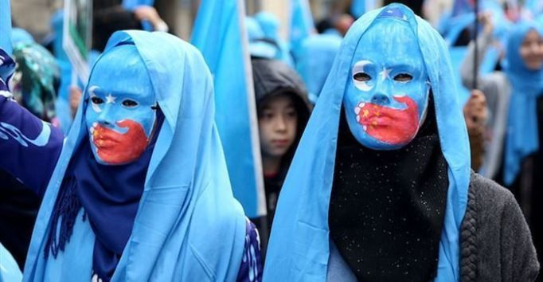
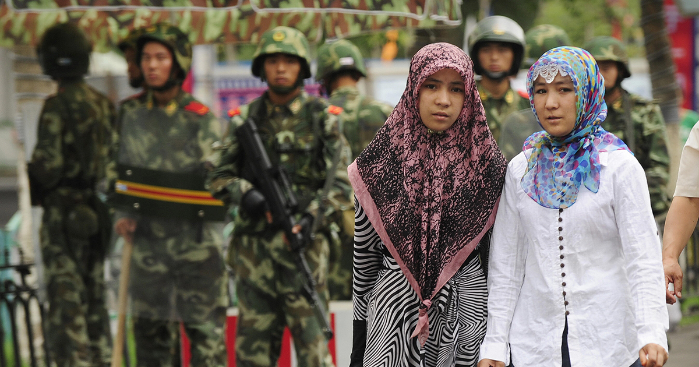
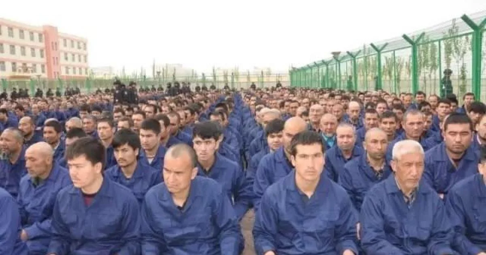
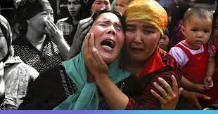

Worldwide Alerts🚨
Uyghur Muslims In Concentration Camps
Intoduction
Uyghurs are an ethnic group who are predominantly Muslim, speak a Turkic language, and live mainly in what is now the Xinjiang province in northwestern China. Unfortunately, since 2016, the Chinese government has targeted the Uyghur people with a vast surveillance system, heavy policing, mass detentions, and forced labor systems. It is estimated that more than 1 million Uyghurs have been detained in a series of prison camps throughout the region. Eyewitnesses, human rights experts and various countries acccuse the Chinese government of committing crimes against humanity and genocide against the Uyghur people within these camps.
Background
The Uyghurs are a Turkic ethnic group originating from and culturally affiliated with the general region of Central and East Asia. The Uyghurs are recognized as native to the Xinjiang Uyghur Autonomous Region in Northwest China. They are one of China's 55 officially recognized ethnic minorities. The Uyghurs are recognized by the Chinese government as a regional minority and the titular people of Xinjiang. Recently, the Uyghur people have been imprisoned in concentration camps due to the widespread of negative views and attitudes towards Muslims in China, as even some Muslim communities in China face legal restrictions on their ability to practice. The camps set up by the Chinese government have a cruel motive to try and attempt to revert the Uyghurs from their Islamic faith with the use of inhumane methods.
The Cruelty of the Camps
The prison/concentration camps withheld in China carry out the most vile and inhumane actions upon innocent people we have ever witnessed since the Nazis. These concentrations camps allow for internment, forced abortion, forced sterilization, forced labor, torture, brainwashing, and rape to occur to these innocent civilians who are only there due to China's strong dislike to Muslims. Additionally, China reinforces their vicious and sickening mission to forcefully revert the Uyghur's from their Islamic faith by implementing surveillance and policing tactics to enforce their banning of fasting during Ramadan, naming their children with traditional Muslim names, and wearing “abnormal beards.” China has killed thousands of Muslims in this mass genocide and has been seen harvesting the Uyghur people's organs as well.
 How We Can Help
Students will learn about events such as the Holocaust in school and think to themselves that
with the peace and safety instilled in our society in today's age, that such an event with a
similar magnitude
could never occur again. But unfortunately events of this magnitude are still
going on in cases such as the
Uyghur Muslims in China and it seems like it has just been swept
under the rug with no voices to speak up
for the inhumane internment and genocide of Uyghur
Muslims. We begin helping by bringing light to this
issue and starting a #savetheuyghurs
hashtag on all social media platforms to get the word out and educate
people on the barbaric
actions by the Chinese government in an effort to halt the genocide. Most importantly,
we
can donate money to assist in stopping these vile actions against the Uyghurs at
https://www.saveuighur.org/donate/.